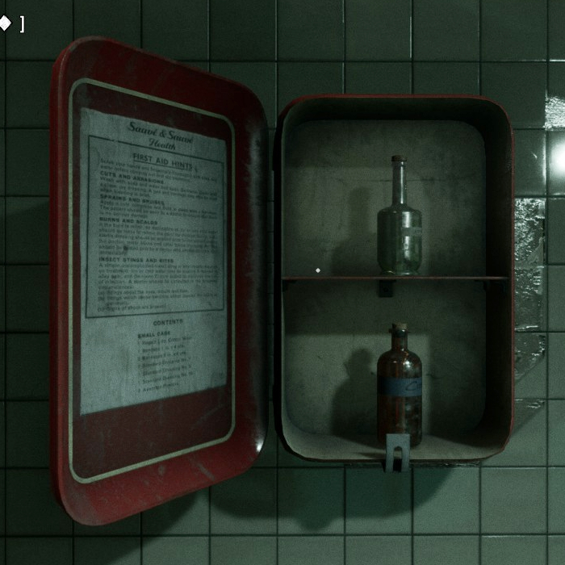
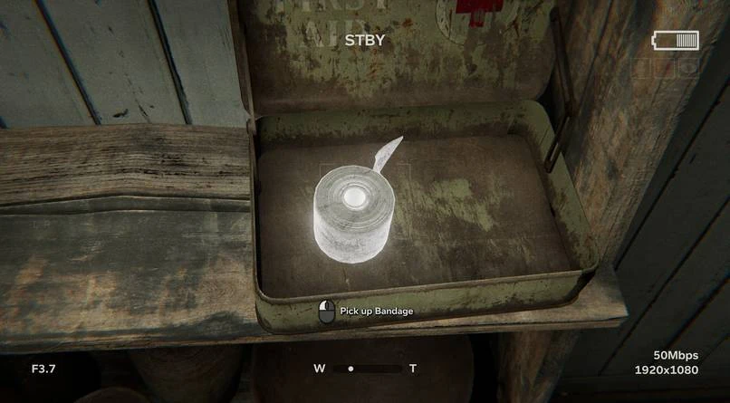
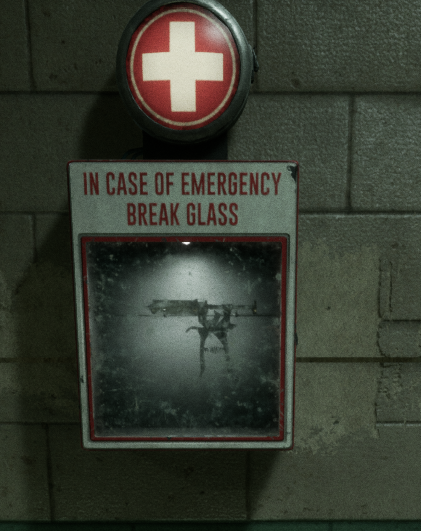
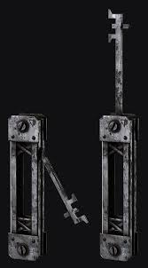
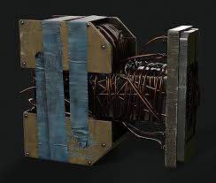
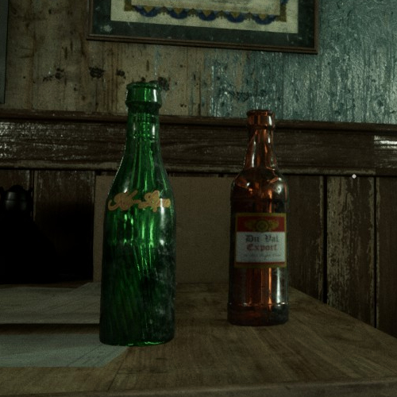

Health Bottle (Small / Large)
Medicine
Restores health when consumed the small bottle heals one health bar, the large one restores everything. Found loose in the environment or inside first aid boxes.
Sinyala Facility Handbook
Consumables and equipment found throughout the Trials.


Consumables and tools scattered through the Trial Environments. Inventory space is limited early on, so choose what you carry carefully.

Medicine
Restores health when consumed the small bottle heals one health bar, the large one restores everything. Found loose in the environment or inside first aid boxes.

Medicine
Restores two health bars and can stop ongoing bleeding. Found in first aid boxes and the environment. The Bandage Expert amp lets a single bandage be used twice.

Medicine
Restores sanity and cures psychosis, and also neutralizes vomit inducing poison such as Arora Kress's traps. A must carry on high sanity drain Trials.

Medicine
Grants temporary unlimited stamina and faster movement ideal for a chase you need to outrun rather than out hide.

Support
Required to revive a teammate who has fully died rather than just gone down. Found only in wall mounted glass boxes, so keep an eye out for them near objectives.

Utility
Opens locked tool boxes and first aid boxes, which tend to hold better loot than unlocked ones. Common, but easy to overlook visually.

Utility
Recharges your night vision goggles. Running out of battery in a dark Trial is a serious problem, so top up whenever you pass a tool box.

Utility
Instantly recharges your equipped Rig without waiting out its cooldown. Uncommon, found in tool boxes and lying in the environment.

Throwable
Thrown to distract enemies away from your position, or thrown directly at one to briefly stun them. Never found inside first aid or tool boxes only lying in the open.